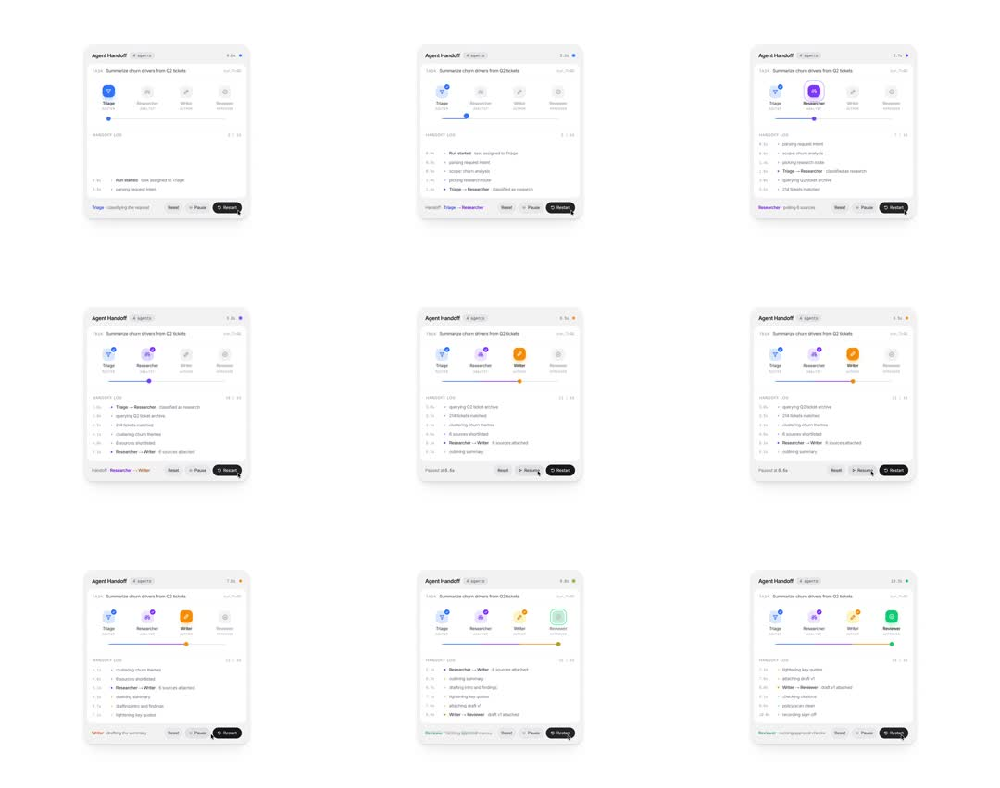

Media
Frame-by-frame

0-15%
Triage active (blue icon, colored dot at its node); log shows 'Run started: task assigned to Triage', 'parsing request intent'; bottom status 'Triage - classifying the request'.
15-35%
Handoff: dot slides along the rail from Triage to Researcher; Researcher icon ignites purple, Triage dims; log appends 'Triage -> Researcher: classified as research', 'querying Q2 ticket archive'; status line updates.
35-55%
Researcher -> Writer (orange icon); rail dot travels; log grows ('8 sources attached', 'drafting summary'); pause pressed mid-run: rail dot stops, controls swap Pause->Resume, 'Paused at 6.4s'.
55-80%
Resume; Writer -> Reviewer (green); rail fills with the gradient of completed segments (blue->purple->orange->green).
80-100%
Reviewer finishes ('running approval checks', 'verifying sign-off'); full rail colored end to end; Restart resets icons to grey, log clears.